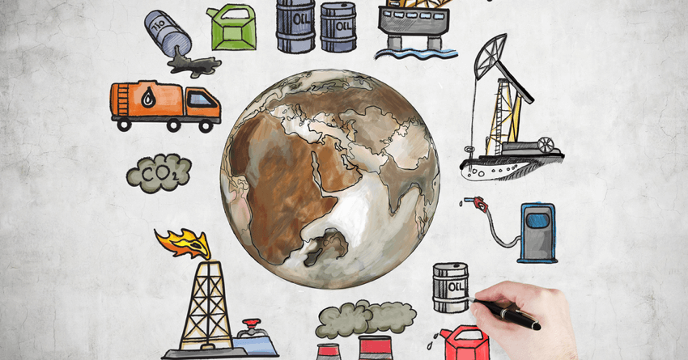

TRAVEL ENTERTAINMENT EDUCATION ABOUT ME CONTACT US
CARBON MARKETS DOWN PLAYING POLLUTION

What if you were to take a flight to go to the UK with your friends? It would be fun, right? But wait! You forgot something.
When you take a flight, traveling in an airplane would increase your carbon footprint? Since aviation requires fossil fuels
that emit tons of CO2; you contribute to the amount of CO2 released into the atmosphere. Have you ever tried to calculate your
carbon footprint? Moreover, the use of home devices leads to the emission of carbon, what about that?
In the contemporary world, we can witness the changes due to global warming and also, climatic changes.
It is necessary for the big industries that are releasing tons of carbon to change. Moreover, it is not
only them but at an individual level as well, we should make efforts to change our habits. However, some
activities are difficult to avoid. If the steel industry stops working just for the sake of global warming,
it will create havoc worldwide.
Here comes the role of carbon offsetting. Carbon Offsetting is the process of investing in the green project,
to reduce the emission of carbon dioxide or greenhouse gases to compensate for the emissions taking place elsewhere.
For example, air travel has a massive carbon footprint. But you can go to any offset website, purchase a carbon offset,
and can reduce the emission. Purchasing offset simply implies that an individual or an entity can pay someone else to
cut their given carbon footprints or carbon credit respectively. The money goes into a green project. This way you cancel
out the CO2 emission by supporting a green venture in some other place.
TYPES OF PROJECTS
Initially, afforestation was a common way to offset carbon. Gradually, other techniques to create offsets came up.
The first one, capturing and destroying the GHGs that will discharge into the atmosphere. Secondly, using a clean source of energy.
Consequently, this stamps out the use of any source requiring fossil fuels. And finally, capturing and sequestering the GHGs such
that they stay in the soil and not into the atmosphere. Take a look at some types of projects.
There has been an increase in forest fires, tsunamis, drought, salt invasion, and storm destructions. Many species are either extinct or are on the verge of extinction due to loss of habitat. And this is something that everyone in the world can witness. Global warming is something which ‘will not happen’, prediction, philosophical threat, and no longer a future threat. It is apparent that it ‘is happening’ and is our reality. Hence, do your bit by reducing your carbon footprint in any way in which you can. Together we can save our planet and as responsible human beings hand over the planet to coming generations in the way they should.
SUBSCRIBE NOW!